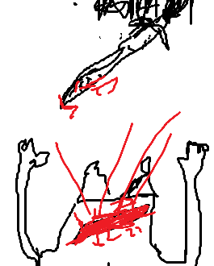

Cette fois-ci, vous n'allez pas vous faire avoir.
vous reprenez le chemin et tuez tous les monstres sur votre passage jusqu'à arriver devant elle.
Elle vous voit et reprend son air paniqué.
"S'il vous plaît, aidez-moi, mes amies se sont fait capturer par les démons, je...".
Vous la regardez avec un grand sérieux. et vous lui coupez la parole.
"Elles sont déjà mortes, qui vous a envoyé ici?".
Vous sortez votre épée et vous essayez de la prendre par surprise.
Mais elle arrive à sortir son épée et à parez votre coup.
Elle vous repousse et son émotion disparaît, elle prend une voix plus grave, elle soupire et d'un froid elle vous dit.
"J'aurais voulu m'amuser un peu, on est marre de tuer et de porter un corps vers la base. Tu as un bon instinct dis donc, tu ne serais pas le héros?"
Au moment où elle finit sa phrase, elle vous fonce dessus. Vous avez la peine de voir le coup mais vous l'esquivez de justesse.
Elle continue à vous enchaîner d'attaques et vous les parez ou esquivez comme vous pouvez.
"Allez attaque amuse-toi, HAHAHAHA".
Vous commencez à voir les coups et parez les coups sans effort, vous parez un coup qui oblige la femme à donner une ouverture, vous tentez de lui donner un coup fatal.
Mais elle fait un grand sourir et elle esquive en se laissant tomber et se relève avec ses mains pour donner un gros coup de pied à votre bras qui fait tomber votre épée 5 mètres plus loin.
Vous vous tournez pour voir où votre épée est tombée.
Au moment où vous relevez la tête, vous voyez la tête de la femme avec un sourir d'une psychopathe et elle vous tranche tout le torse qui vous fait écouler par terre.

La jeune femme vous regarde au sol et avant de vous achever vous entendez.
"Au moment où on commence à s'amuser. aaaa quelle déception"
Elle vous pointe son épée sur votre cou.
Vous mourez sur ce coup.